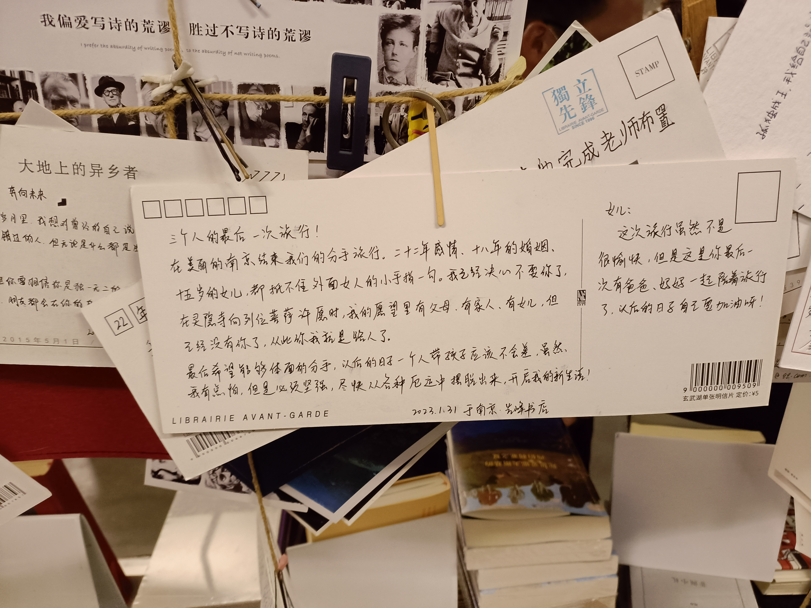
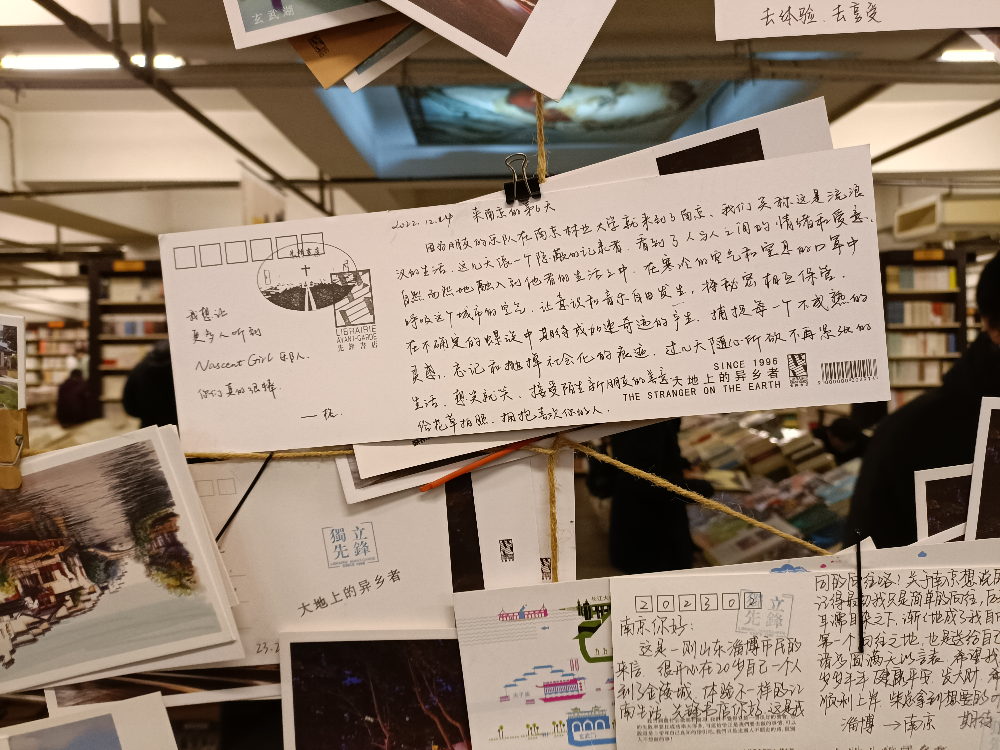
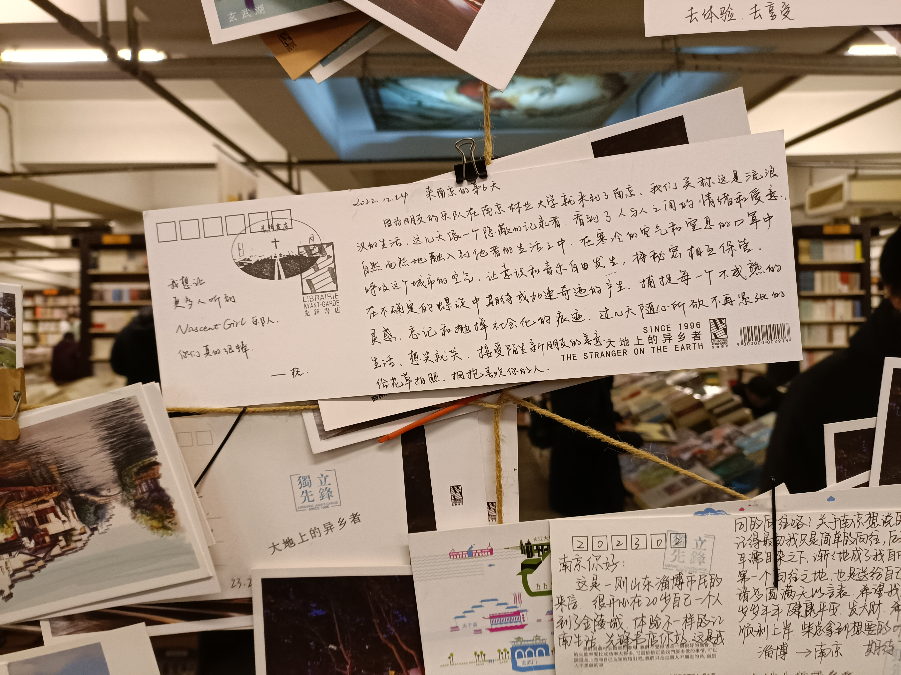
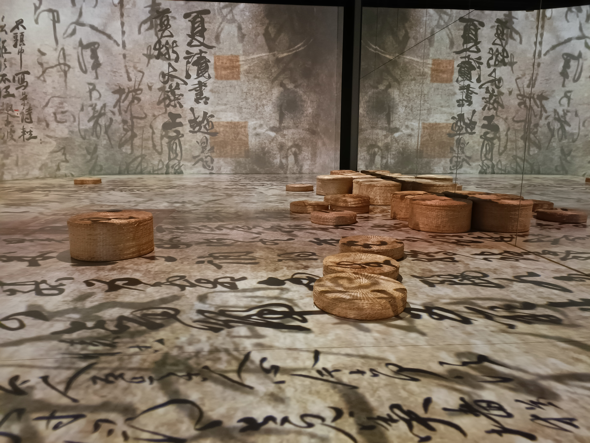

南京最后一晚 2.12
夜间细雨慢慢汇聚在镜片上模糊视线，脸颊也时不时感受到阵阵清凉。吵闹的科巷透过朦胧的玻璃会有那么几个瞬间显得清静，我仍会记起某些事情，记起自己的自私。
南京的两三天里到了挺多景点，印象较深且值得提笔的也有几处。
夫子庙的秦淮风光带，大道上视野开阔，瓦房古街的青白墙体不容分说地映入眼帘，虽然看得出有现代加工的痕迹却不会让人觉得反感。树上彩灯在两路延伸变换，光彩协调，配合热闹却不拥挤的人群，有种和谐充满希望的氛围。
写到这我想起乌衣巷的中年黄包车夫，车上的年轻女生衣着靓丽，精致亮闪闪的白色手提包摆放在她的大腿和黄包车扶手之间的间隙处，高处的她不在意的眼神轻飘飘地掠过我们。
“虽然知道这本质上是一种服务业，很常见的消费者-服务者关系，但是我看到这种场景还是会觉得很怪。”
“比看到乞丐乞讨还怪。”
“对。”
先锋书店的明信片墙，卡片上许许多多不同身份的人的故事，赋予了许多书店不常有的意义。

 

先锋书店本身给人的体感是地下停车场＋菜市场。天花板上赤裸着密集的黑灰色管道，书籍像批发市场上的菜品一样平平常常地被摞在一块，走马观花的人群在不宽的走道上不紧不慢地流动，像极了菜市场，只不过书店里更多的是拥有青春年华的年轻人。
走在玄武湖岸边，因为湖水拍打沿岸的声音驻足，放眼望去灰白的天色笼罩着空旷的湖面，凉风携着雨水轻敷在脸上，那会儿我真希望身边有个人，可以向它慢慢吐露最隐蔽的心事。
杭州最后一晚 2.14
乏善可陈。主打一个和金老板聊天。雨天逛了植物园，第二天放晴从黄龙洞翻小山过去逛了西湖，绕着西湖走了一圈，感受就是面积很大景色却没有多突出。明天本来打算去乌镇的，但是是大晴天，不想去了，受 b 站视频影响感觉乌镇就得搭配阴雨天，实际上也能猜到就算到了那里商业气息浓厚，并不会有想象里的那么有意境。今天是情人节，金老板陪 npy 去了，我在想明天的行程怎么安排。
绍兴第一天 2.15
昨天想半天仍旧没有好主意去哪玩，本来乌镇下一站是去宁波/台州看看海，但突然觉得海边应该在气候更冷抑或者更热时去，顿时没了心境。暂时放弃了制定计划，然后随手翻到了《野草》，脑子里自动响起了以前背烂了的“鲁迅，原名周树人，浙江绍兴人”的声音。于是就决定来绍兴了，离杭州也近。
听说绍兴北有叙利亚北站之称，于是从杭州坐火车来绍兴站，离市区的鲁迅故里也近。前几段路程都是高铁，坐上火车后，五官传来的信息又让我想起几天前与同学的对话。
“再接下来准备去哪呢？”
“先去杭州，乌镇，如果还有精力就找个地方看海去了。”
“海有什么好看的。”
“还好吧，我还没真正意义上认真看过呢。”
“国内人太多了，在海边看见年轻美好的肉体会比较舒服，但是看到一些不健康的肉体，比如一些油腻的大肚子，就很……会有点不适。”
我很纳闷，他的包容力绝不止于此，于是问道： “怎么会有这种感觉？”
“知乎上有个问题，‘人生中最幸福的十件事情是什么’，其中有个回答的某一条的大概含义是：出门散步，路上看不到任何苦难之人。 ”
我大概懂他意思了，回道“确实”。
走在鲁迅纪念馆的长廊里，想起《野草》，实际上我也只能想起它，因为除却那些教材里的课文我完整读过的他的作品只有《野草》。虽然一代人有一代人的使命，但每个个体从来不会孤单，巨人也有类似的苦闷与挣扎，宏大且不如人意的时代背景，平淡平庸的日常都会滋养出一种绝望性缠绕着身处其中的个人，巨人与之对抗后也会哭泣，对丑恶的鞭笞愤怒却没有停歇。
三味书屋是哪三味？百草园可能只有一种草。
明天去徐渭艺术馆，再有时间去东湖，兰亭看看。
绍兴续 2.16
中午去了徐渭艺术馆，一楼装修色调和布局很大方简约，与那些我看不懂的书法绘画作品相得益彰，只觉得很有格调，如果天花板的灯暗装，黑色地砖配上些灰白色纹路就更好了。
二楼主要是一些典籍收藏，配合上这个歌单(https://y.qq.com/n/ryqq/playlist/7944998067)，有不一样的氛围。阳光在建筑上的角度也很好，适合拍照。
数字艺术馆也还不错，看绍兴船上的老翁穿越到梵高的夜里逐渐与星空融为一体，挺有意思。


归程
坐火车回去了，宣告寒假的结束。
拥抱复杂。